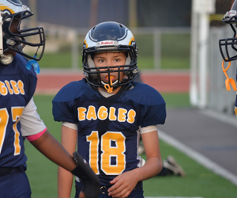

Football Speed and Agility Training to Prevent Injuries
In This Article: Areas to Address Learning to Stop Strength Supports Speed
Faster football teams often have fewer injuries. Collision avoidance and elusiveness are highly prized skills. Yet it’s easier for football coaches to focus on teaching football fundamentals, assessing player capabilities and practicing specific plays on offense and defense.
Areas to Address
There’s still time for young players to take control of this important aspect of the game. First, make sure that speed training is incorporated into any warm-up activities. Make sure your child’s football coach and summer clinic addresses dynamic warm-up and stretching, running mechanics, acceleration and deceleration, small area speed and lateral foot quickness.
Learning to Stop
Contact is not always the culprit in football, especially as it relates to knee injuries. Many football injuries occur as a player is stopping suddenly and switching direction. Speed must be combined with agility, and the ability to pivot and accelerate in a different direction after coming to a full stop. How to land properly at different speeds is rarely taught but very important to prevent injury.
Strength Supports Speed
It’s important to emphasize how strength and speed training work together. Only muscle causes movement. The stronger the muscles and the more forceful the muscle contractions, the faster your child will run and pivot to change directions, and the further he will throw or kick the football. The same goes for having greater impact at the lineman positions for making stronger tackles and blocking.
Strong, healthy muscles support and protect the body against injury. If these conditioning basics are not offered for the team throughout the season, speak up and find out why. Developing excellent motor patterns, skills and structural integrity is the basis for your child’s long-term athletic development.
Related Articles
Resources
Other Articles
Related Categories